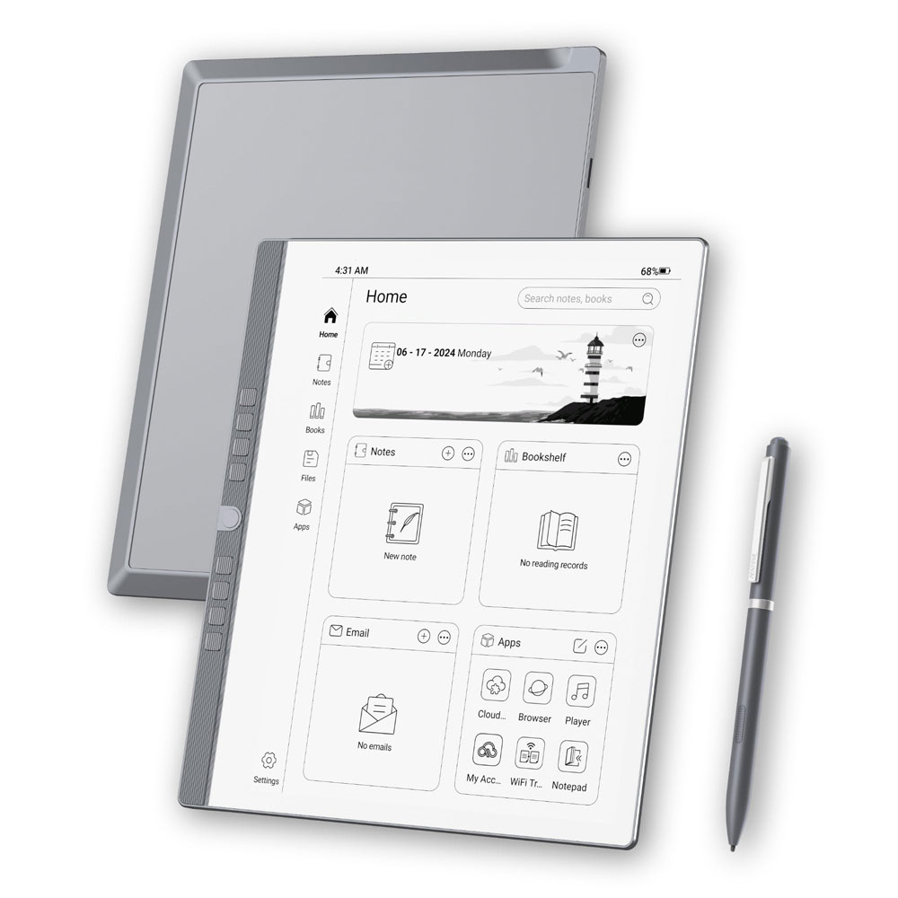
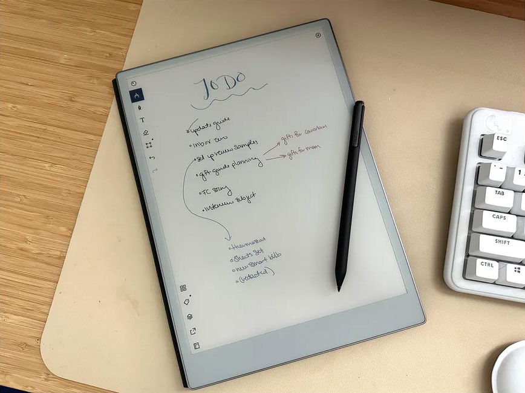
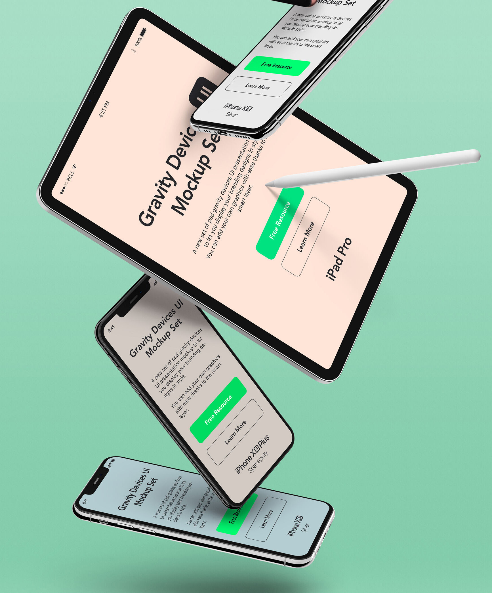

Choosing the right E-Ink tablet can be confusing. From Kindle Scribe and reMarkable to BOOX and Supernote, each device excels at different tasks like reading, handwriting, and focused work.
This guide breaks down the best E-Ink tablets based on real-world use so you can quickly find the one that fits your reading habits, note-taking style, and productivity needs.

E-Ink tablets are designed for eye comfort, distraction-free reading, and handwritten note-taking. This guide helps you choose the right one.
Paper-like display with zero glare.
Ideal for long reading sessions without eye fatigue.
Natural pen feel with handwriting.
Perfect for students, professionals, and planners.
Weeks of usage on one charge.
No daily charging required like traditional tablets.
No notifications, no eye strain.
Stay focused on reading, writing, and thinking.
Compare the most popular E-Ink tablets based on reading, writing, battery life, and overall usability.
E-Ink tablets remove distractions and help you stay focused while reading, annotating PDFs, or taking handwritten notes. Unlike traditional tablets, they provide a paper-like experience that reduces eye strain and increases productivity.
Kindle Scribe: Ideal for readers who want seamless access to millions of books with a familiar interface.
reMarkable 2: Best for writing enthusiasts, note-takers, and minimalists who crave distraction-free digital paper.
BOOX Note Air: A versatile tablet with Android apps, front light, and high customization for power users.
Supernote: Long-lasting and durable, perfect for organized note-taking and long-term digital journals.
Choosing the right E-Ink tablet depends on your workflow, reading habits, and writing needs. With the right device, you can transform the way you read, write, and think.


From document reading to handwriting recognition, modern E-Ink tablets provide powerful tools without hurting your eyes.
Many E-Ink tablets come with high-precision styluses, allowing you to take notes or annotate PDFs as naturally as you would on paper. They also support cloud syncing, ensuring your notes are always backed up and accessible across devices.
With long battery life, lightweight designs, and customizable reading modes, these tablets offer a seamless experience whether you're a student, professional, or book enthusiast. They are designed to help you stay productive while reducing screen fatigue.
No backlight glare, perfect for long sessions.
Reduces eye strain and allows comfortable reading for hours.
Lasts days or even weeks.
Ideal for travel, work, and study without frequent charging.
Natural pen experience.
Write and annotate documents as if using real paper.
Focus on reading and thinking.
Simplified interface keeps you productive without notifications.
Comfortable for travel and study.
Easy to carry and hold for extended reading sessions.
Notes, PDFs, planning.
All-in-one device for work, study, and personal organization.
Whether you’re reading books, reviewing PDFs, or taking handwritten notes, E-Ink tablets are designed for quick setup and long-term comfort.
Power on your E-Ink tablet, connect Wi-Fi, and start reading instantly with preloaded apps or your preferred formats (PDF, EPUB).
Adjust pen sensitivity, page templates, and organization folders to match your study or work style.
Sync notes to cloud services and access them across devices while keeping your eyes relaxed.